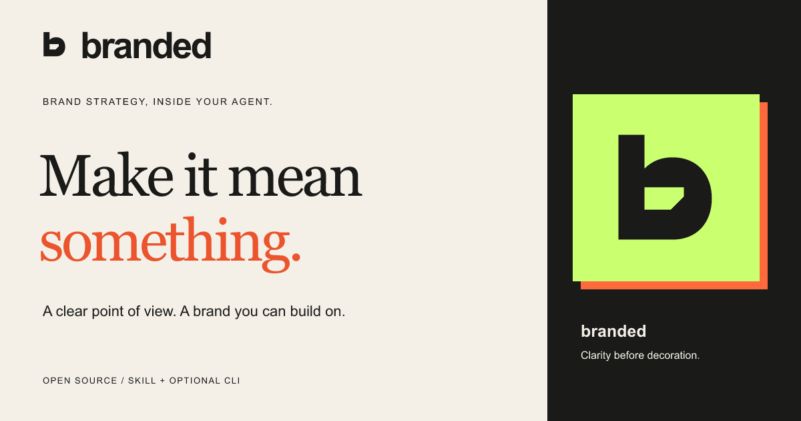

The branded playbook / recommended identity
Character
with a reason.
Our job is to help people make creative decisions they can stand behind. Everything—from a sentence to a symbol—should make that job feel clearer.
Make it mean something.
Our promise is a clear point of view and a brand you can build on. The desired feeling: “I know what I’m making, and why.”
Be deliberate, candid and inventive. Explain a choice in ordinary language. Show the work. Say what still needs checking. Keep the user’s decisions intact.
These are design intentions, not measured psychological outcomes. We validate them through real use.
The considered cut.
 Primary symbol
Primary symbol Reversed on ink
Reversed on inkA solid lowercase b with one angled counter. The shape stands on its own in one color; lime and coral belong to the surrounding system.
Keep clear space of at least one stem width around the mark. Use the full symbol at 24px or larger, and the dedicated favicon at 16px. Use the full lockup at 140px wide or larger.
Keep its proportions. Keep the counter open. Don’t stretch it, fill the opening, add gradients, or place it on a busy image.


Warmth. Structure.
A little interruption.
#f4f0e8The breathing room.
#1a1b19The clear structure.
#caff70The work moving forward.
#ff6a3dThe moment of emphasis.
Use paper and ink as the foundation. Give lime one clear area to own. Use coral sparingly. Body text is ink on paper or paper on ink; put ink text on lime and coral. Use the darker coral #eb542c for large display text on paper; the bright accent stays in surfaces and decoration. Blue remains a focus indicator.
A point of view.
A plain next step.
A brand worth
standing behind.
Georgia Regular and Italic carry the big thought. Use generous scale, short lines and space around them.
THINK CLEARLY.
CHOOSE DELIBERATELY.
MAKE IT YOURS.
System sans carries reading, controls and instructions. Mono labels organize the work. The outlined wordmark travels without a font dependency.
Work like an editorial desk: one strong proposition, an orderly grid and an expressive object. Keep the tilted-paper treatment for illustrative cards. Never rotate essential instructions or controls.
A creative partner.
A useful answer.
“A clear point of view. A brand you can build on.”
“What are we making, and what do you want people to do after seeing it?”
“This direction makes the main idea easier to recognize at a glance.”
“The direction is ready. This session can’t export the editable artwork yet.”
Avoid instant-transformation claims, invented evidence, cleverness that hides the instructions, and promises that depend on tools the user doesn’t have.
One idea.
Different surfaces.

Launch and repository
Lead with “Make it mean something.” Follow with the descriptor “Brand strategy, inside your agent.” Show a real output or an honest workflow example before asking people to install.
Social cover PNG · 1200 × 630 ↓
Small spaces
Use the b alone for a profile, skill icon or favicon. Use the full lowercase name when first introducing the product.
Avatar PNG · 512 × 512 ↓
The rule behind all the rules